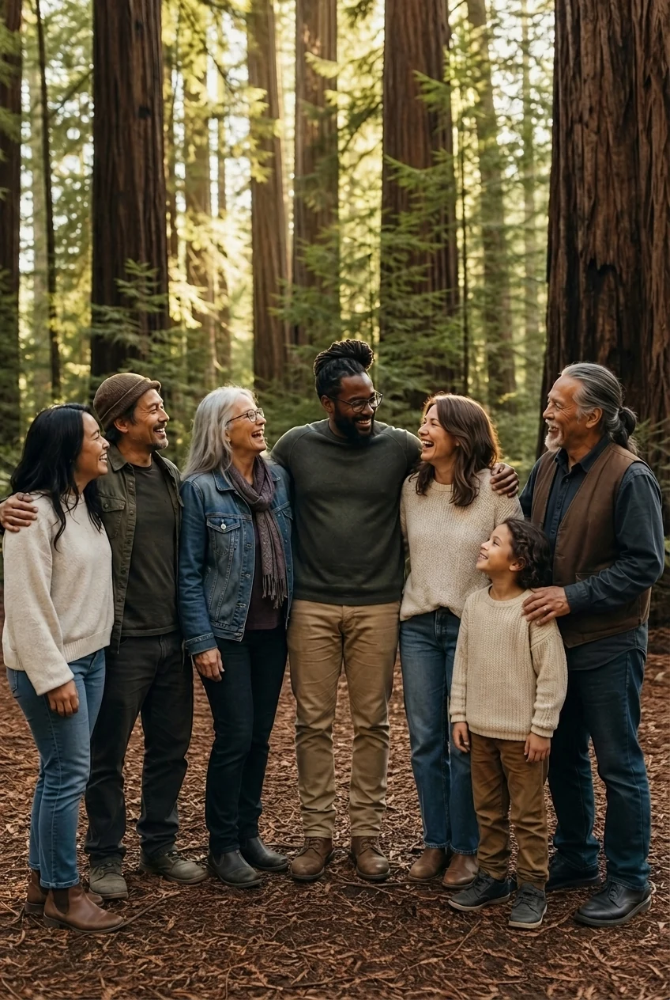
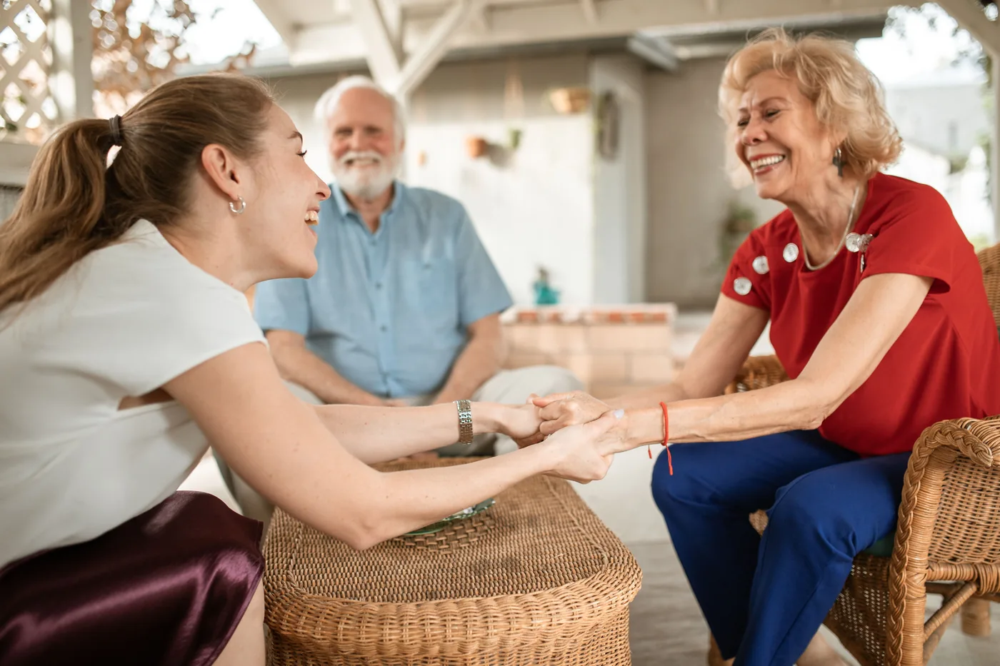

Whole-Person Support
Care coordination across health, behavioral health, housing, benefits, employment, and re-entry.
Whole-person support · Northern California
Whole-person, community-based wraparound services for people facing barriers to stability.

What We Do
We stay with people through complexity and coordinate the pieces that affect stability.
Care coordination across health, behavioral health, housing, benefits, employment, and re-entry.
We meet people through channels already part of their lives and build support around what is easiest to reach.
We stay with people through complexity, on their timeline. When one door closes, we find another way.

Who We're For
Redwood Horizon is for people facing barriers to stability who need practical, community-based support to move forward. Whether it is one urgent need or several systems at once, we help figure out a different path.
Ready to connect?
Reach out for yourself, someone you care about, or someone you serve.